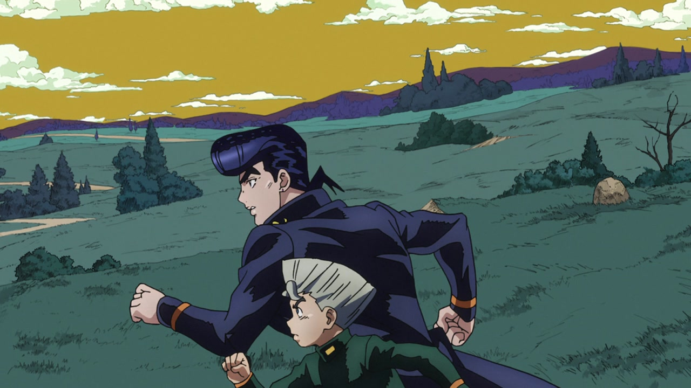
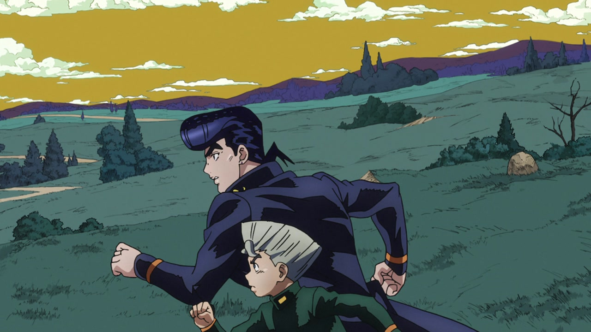

Hello, everybody, and welcome back! Today we’re going to take a look at Episode #11, Red Hot Chili Pepper - Part 1; this was arguably one of the episodes that needed the most retouching, and thankfully David production obliged, delivering the episode with the most changes yet (in Diamond is Unbreakable, that is! Phantom Blood #03 still holds the title of “JoJo episode with the most differences” and probably always will). Without further ado then, let’s dive in!
- Let’s start with a very minor difference; in this scene, a line in Josuke’s collar was white in the TV version and was re-coloured dark blue in the BDs:
- In the title, they moved “その１” (Part 1) slightly to the right:
- Here, they fixed Josuke’s receding hairline:
- And here his collar was re-coloured (or re-collared, har, har, har), his sideburn shortened and the colours of the background scene have been made slightly darker:
- Here they drew in the bit of finger outline that was missing from the TV version:
- In this bit here, they properly shadowed part of RHCP’s beak:
- …and here they recoloured part of Josuke’s eye from pink to white:
- This picture here could very well be used for a “Spot the difference” game; Josuke’s head has been almost entirely redrawn, his aura has been retouched, the peace sign on his lapel has been made less wonky and they’ve also drawn a button that was missing from his uniform, Crazy Diamond is no longer strabic and RHCP’s eye has been recoloured:
- NO SHOES INDOORS:
- The exaggerated shadow in this scene has been toned down in the BDs:
- Josuke has been redrawn and coloured properly here:
- Okuyasu’s face has been retouched so his features are more consistent with his model:
- In this shot Josuke, Koichi and Okuyasu’s heads have all been redrawn; the shadows beneath their feet are also slightly lighter:
- And here, Okuyasu’s closeup has been retouched:
- And here, they drew the bottom teeth in Jotaro’s mouth:
- And here Okuyasu and Koichi have both been slightly retouched, but the biggest offender was the profile shot of Josuke (a shot which, to be fair, stayed on screen for just two frames); that has been redrawn too:
- Here, again, is a shot which has been more or less completely redrawn. Okuyasu’s face, dollar signs and Billion writing, Koichi’s face, Josuke’s heart and peace symbols, his missing anchor, his nipple zippers and his whole face:
- And here, Okuyasu and Jotaro’s faces have been retouched:
- In this shot, Josuke’s jaw, Jotaro’s pullover and both of their eyes have been redrawn:
- Here, Okuyasu’s head and hair have been retouched, and they’ve drawn in the missing ¥ and $ signs:
- In this shot, most of Josuke and Koichi’s faces have been redrawn (and again, that wonky peace sign has been fixed):
- Here, Josuke’s eyes are wider:
 

- This animation is faster, and they’ve added an extra bit in the middle:
- Almost every frame of Okuyasu turning in this scene has been redrawn:
- Most things have been redrawn in this shot, really:
- This bit here is brighter:
- And this scene is more zoomed in in the BDs:
- This animation of RHCP attacking The Hand is brighter as well:
- Here RHCP’s head and aura have been resized and redrawn; its aura has also been slightly retouched:
- Okuyasu’s chopped off arm has been uncensored:
- Jotaro and Josuke’s foreheads are darker in this scene:
- Another shot of Okuyasu’s uncensored arm:
- RHCP’s beak shading has been fixed in this couple of frames:
- Here, Josuke’s heart and peace symbols have been made bigger, his uniform and his face have been retouched and Jotaro is taller and drawn slightly better:
- Okuyasu’s arm again:
- Here Okuyasu’s arm has been uncensored and shaded better, and Koichi’s face has been redrawn; Josuke’s aura is also slightly less bright:
- Koichi’s head has been redrawn in this shot:
- And, to top it all off, a nice little credit difference! Here, they credited 八木華子 (Yagi Hanako) for the art of the shmup game Josuke was playing in the beginning of the episode:
That’s it for this episode! I’m really glad David production decided to redraw most scenes in this episode, as it was (in my opinion) the weakest one in the first cour. I hope you enjoyed this comparison! See you tomorrow for Episode #12!
Bye!
P.S.: You might have noticed that the image comparisons no longer darken on mouseover. That was an in-built feature of the javascript snippet I used, but I (and other people) thought it was a bit annoying, so I took it away and set the text colour to black. Let me know what you think!